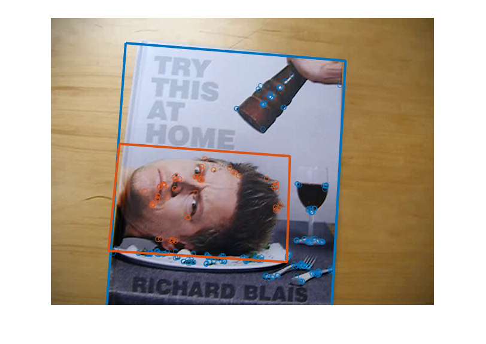

Multi-target planar tracking
Example of using features2d framework for multiple planar targets tracking in a video using homography matching. This sample uses the PlaneTracker class.
Sample video: http://www.youtube.com/watch?v=pzVbhxx6aog.
Sources:
% video file, and multiple targets to track [x,y,w,h] vid = fullfile(mexopencv.root(), 'test', 'blais.mp4'); assert(exist(vid, 'file') == 2, 'Missing video file'); win = [ 136 0 366 433; % book 135 165 285 175 % face ]; N = size(win,1); % open video feed, and get firs frame cap = cv.VideoCapture(vid); pause(1); assert(cap.isOpened(), 'Failed to open video'); frame = cap.read(); assert(~isempty(frame), 'Failed to read frames'); % create and initialize tracker tracker = PlaneTracker(); for i=1:N tracker.addTarget(frame, win(i,:)); end % prepare plot hImg = imshow(frame); clr = lines(N); for i=1:N % keypoints and bounding box for each tracked target hPts(i) = line(NaN, NaN, 'Color',clr(i,:), 'LineStyle','none', 'Marker','o'); hLin(i) = line(NaN, NaN, 'Color',clr(i,:), 'LineWidth',3); end % main loop while ishghandle(hImg) % read new frame frame = cap.read(); if isempty(frame), break; end % track and update keypoints/boundaries of matched targets tracked = tracker.track(frame); for i=1:numel(tracked) tr = tracked(i); set(hPts(tr.index), 'XData',tr.pt1(:,1), 'YData',tr.pt1(:,2)); set(hLin(tr.index), ... 'XData',tr.quad([1:end 1],1), 'YData',tr.quad([1:end 1],2)); end % update tracked objects which were not found in current frame idx = setdiff(1:N, [tracked.index]); if ~isempty(idx) set(hPts(idx), 'XData',NaN, 'YData',NaN); set(hLin(idx), 'XData',NaN, 'YData',NaN); end % display result set(hImg, 'CData',frame); drawnow; end cap.release();